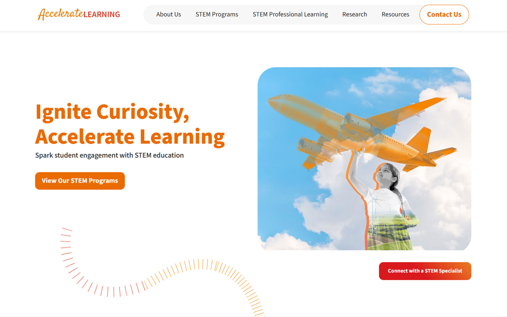
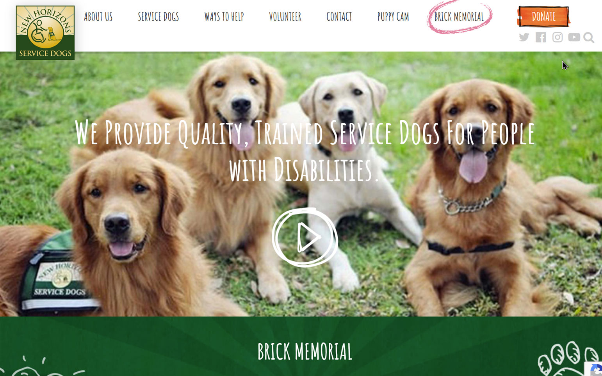
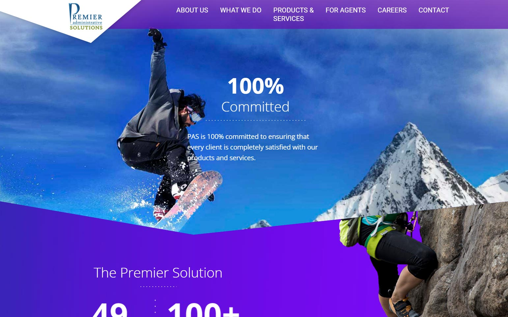

Accelerate Learning | Migration to WordPress
The largest and most complex WordPress site I have worked on is for Accelerate Learning, Inc. The leading provider of STEM education solutions, serving schools and districts across the United States. Their focus is on creating innovative, research-based, and results-driven learning tools to empower educators and students in the STEM fields.
Wish Farms | WordPress Website Development
Developed a new website for Wish Farms (WishFarms.com), blending creativity and functionality to highlight their rich history and commitment to quality produce. The site features a vibrant, user-friendly design with dynamic elements, including product showcases, and a recipe hub.
Redlands Christian Migrant Association (RCMA) | WordPress Website Development
Developed a modern, responsive website for RCMA.org, designed to highlight their mission and impact on communities. The site features an intuitive design with dynamic content areas to showcase programs, events, and success stories.
Coker University | WordPress Website
Led the development team for Coker University's website (Coker.edu), building a custom WordPress theme to reflect their brand identity across 1,000+ pages. Designed a responsive and user-friendly platform showcasing academic programs, faculty profiles, events, and student resources.
Iron Eagle X | Website Design and Development
Designed and developed the IronEagleX.com website to showcase their innovative solutions and industry expertise. Built using custom WordPress themes and plugins, the site features a sleek, modern design with responsive layouts to ensure a seamless user experience across all devices.
World Travel Holdings | WordPress Website
Redesigned the World Travel Holdings website (WorldTravelHoldings.com) by developing a custom WordPress theme to reflect their global travel expertise and brand identity. Created a responsive and engaging platform featuring travel services, partner programs, customer testimonials, and dynamic resources to enhance user experience and drive engagement.
Cheaters (American TV series) Website Design (2010)
Designed the website for Cheaters in 2010, delivering a functional and engaging platform to align with their audience and brand identity. The site featured intuitive navigation, content showcases, and multimedia integrations to highlight episodes, investigations, and show-related content.
Although the site has since been updated, an archive of the original design can be viewed here: Archived Cheaters Website (2010).

New Horizons Service Dogs | Website Development
Developed a new website for New Horizons Service Dogs (newhorizonsservicedogs.org), focusing on accessibility and user-friendly design to support their mission of providing service dogs to individuals with disabilities.
Steven Anthony Luxury Homes | WordPress Website Setup
Developed the Steven Anthony Luxury Homes website (StevenAnthonyLuxuryHomes.com) using the WPBakery page builder and Salient theme. Customized the site to reflect the client’s unique luxury real estate brand, creating a visually striking and user-friendly platform tailored to showcase premium property listings and personalized services.

Premier Administrative Solutions | Website Development
Developed a new website for Premier Administrative Solutions (premieradministrativesolutions.com), focusing on creating a professional and user-friendly platform to showcase their administrative services and solutions.
{kind=link}
{kind=link}
{kind=link}
{kind=link}
{kind=link}
{kind=link}
{kind=link}
{kind=link}
{kind=link}
{kind=link}